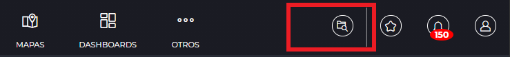
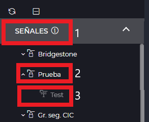
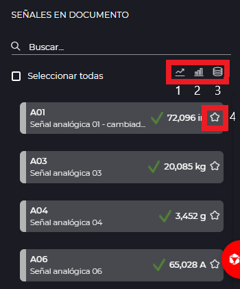
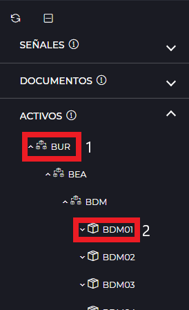
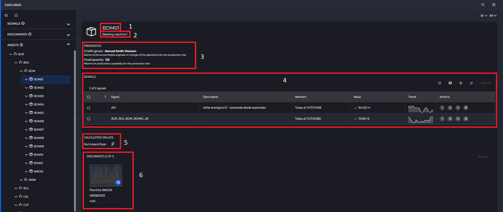

EXPLORER
- 1 Introduction
- 2 Signal groups
- 2.1 Hierarchy tree
- 2.2 Detail
- 3 Documents
- 3.1 Hierarchy tree
- 3.2 Detail
- 4 Inventory
- 4.1 Hierarchy tree
- 4.2 Detail
- 5 Real-time signal table
1. Introduction
The explorer is one of the main parts of IDboxRT, and it will also be the screen that the user will see, in case he/she does not have a document as a start page, once he/she has authenticated in the system.
From here we will be able to visualize the hierarchies of signal groups, IDboxRT documents and inventory, in addition to being able to start an analysis quickly and easily.

Access to the explorer is through the icon present in the top bar.
2 Signal groups
When the explorer is opened, the IDboxRT signal group hierarchy is displayed, together with the signals associated with our user’s default security group. The signal group hierarchy tree is shown on the left side and in the central part we can see a detail view.

2.1 Hierarchy tree
The organization of the signal groups is presented in the form of a hierarchical tree, in which we can find all the signal groups (1) available to the user, as well as the different security groups (2) to which the user belongs.

The actions that the user can perform on the signal group hierarchy tree are as follows:
- Context menu by right clicking on a tree element:
- Security group:
- Reload: allows the user to reload the tree element, it will reload the elements that hang from it.
- Signal group:
- Reload: allows the user to reload the tree element, it will reload the elements that hang from it.
- Edit: will take us to the signal group editing tab.
- Rename: text input will be enabled so that we can modify the signal group name directly from the explorer.
- Delete: removes the signal group from the system.
- Security group:

- Through the action button panel at the top of the tree, we can perform the same actions described above, by simply selecting an element in the tree and the actions corresponding to the type of element selected will be enabled, whether it is a security group or a group of signals. It should be noted that we will always keep in mind the reload actions. and contract element and only the edit actions will be displayed , rename and delete when selecting a group of signals.

Below is detailed how to display the signals present in a particular safety group or group of signals, depending on the type of element selected in the signal hierarchy tree. * Signals literal (1): all the signals associated to our default security group will be displayed. * Safety group (2): all the signals associated to the selected safety group will be displayed. * Signal group (3): all the signals associated to the selected signal group will be displayed.

2.2 Detail
In the central part of the explorer there will be displayed a table of signals with real time, the signals to be displayed differ from the selected element in the tree as explained in the previous point.
3 Documents
From the document tree, we can access the different types of documents present in our IDboxRT hierarchy.
3.1 Hierarchy tree
The organization of the documents maintains the structure of the signaling tree, therefore, in the root will be displayed all the documents present and to which we have access of our security group by default, and in addition we will also display the rest of the access groups in which the user is associated.
The actions that the user can perform on the document hierarchy tree are the following:
- Context menu by right clicking on a tree element:
- Security group:
- Reload: allows the user to reload the item from the tree, it will reload the items that hang from it.
- New folder: creates a folder within the selected security group.
- Folder:
- Reload: allows the user to reload the item in the tree, it will reload the items that hang from it.
- New folder: creates a folder inside the selected folder.
- Rename: allows the user to rename the selected hierarchy item.
- Delete: deletes the folder from the system.
- Publish: allows you to modify the access groups to which the folder is associated.
- Shortcut: allows you to create a shortcut to the folder in the destination location selected by the user.
- Document:
- Reload: allows the user to reload the tree element, it will reload the elements that hang from it.
- Edit: opens the document in edit mode.
- Open: opens the document in viewer mode.
- New folder: creates a folder inside the selected folder.
- Rename: allows you to rename the selected hierarchy element.
- Delete: deletes the folder from the system.
- Publish: allows you to modify the access groups to which the folder is associated.
- Shortcut: allows you to create a shortcut to the folder in the destination location selected by the user.
- Security group:
Through the actions button panel at the top of the tree, we can perform the same actions described above, just by selecting an element from the tree and the actions corresponding to the type of element selected will be enabled, whether it is a security group, a folder or a document. Note that the reload and collapse actions will always be present and when selecting a document the publish and shortcut actions will not be present.
To modify the organization of our IDboxRT hierarchy, either because we want to change the order of priority in which the items are displayed or move it to another folder just drag the item and place it in the desired location. Once this action has been performed, a new icon will appear in the upper button panel. clicking on it will save the changes.
NOTE: It is not possible to move a document from one security group to another.
3.2 Detail
Clicking on any element of the document hierarchy will load in the view a signal table with real time (1), which shows the signs sorted by frequency of use and a carousel for each type of document, in each carousel the documents are presented sorted by those with the highest frequency of access (2). For example: if we click on a folder it will show us the most frequently used signals in the documents contained in that folder, and in the carousel of documents all the documents stored in that folder will be displayed.

In the document carousel, only the documents that enter the screen will be shown. To see all the documents associated with the same type, click on see all (1).

Clicking on any of the documents in the carousel will open that document in viewer mode, and placing the cursor on the document tab will display the following actions: * Info (1): Displays in a side panel the information related to the document. * Open in editor mode (2): Opens the document in editor mode.

From the document information side panel we can take a quick look at some information associated with the document, including the signals contained in the document.

The information displayed is as follows: document name, description, creation date, size (only applies to synoptic documents), author, security group in which the document is stored and the signals contained in the document together with their value in real time. From the section of signals in documents we can perform a quick analysis creating a trend chart (1), grouped chart (2) and a historical document (3) with the signals that we have previously selected, this analysis will be created with a time range of the last day. In addition, by clicking on add to favorites (4) we can add the desired signal to the launcher for future analysis.

4 Inventory
From the document tree, we can access the different types of documents present in our IDboxRT hierarchy. It maintains the structure of the signal tree, therefore, in the root will be displayed all the documents present and to which we have access of our default security group (1), and in addition we will also display the rest of the access groups in which the user is associated (2).
4.1 Hierarchy tree
In assets we can view the hierarchy associated with the inventory, and the different properties assigned to each of the assets (1) and organizers (2). When the inventory tree is displayed, the information related to the first asset in the tree will be shown.

The actions that the user can perform on the asset hierarchy tree are the following:
- Context menu by right clicking on a tree element:
- Reload: allows the user to reload the tree element, it will reload the elements that hang from it.
- New template: Allows the user to create a new document template. When clicking, a new window will open for selecting the document type of the template. The new template will have selected the previously selected template.
Through the action button panel at the top of the tree, we can reload or collapse the selected node.
3.2 Detail
In the central part of the explorer, the following information will be displayed for the selected asset: name (1), description (2), properties (3), associated signals (4), calculated fields (5) and the document templates that can apply to the selected asset (6).

In the asset view we have different display options: * View mode (1): * Item: detail of the selected asset/organizer. * Content: display the details of the organizers/assets contained in the selected asset. * Category mode (2): * Uncategorized: details of the selected asset/organizer. * With category: the different properties and signals of the assets will be shown grouped by hastags.
4. Real-time signal table
The display of signals together with their value in real time will always be present in the signal tree, documents and assets, with the particularity that in assets and documents, only the first 10 signals will be shown and we will have to click on “See all” to enter in paged mode, while if we are in the signal tree, the signal table will always be shown in paged mode. It should be noted that if we are in mode we will be able to apply a complex filter. The series of actions that can be performed from this section are detailed below: * My selection : Adds the currently selected signals to the launcher. * Historicals : Creates a history document with the selected signals and with a time range of the last day. * Subscription : Starts the creation of a notification rule with the selected signals. * Tendency : Creates a trend chart with the selected signals and with a time range of the last day. * Set/Release value : Allows to set or release a real time value. * Filtering : It allows us to introduce complex filtering, so that we can quickly filter the signals according to their type, name, description, etc.
NOTE: the option to enter complex filtering will only be visible when we are in page mode, i.e. when we have clicked on “view all” or are listing signals from the signal hierarchy.